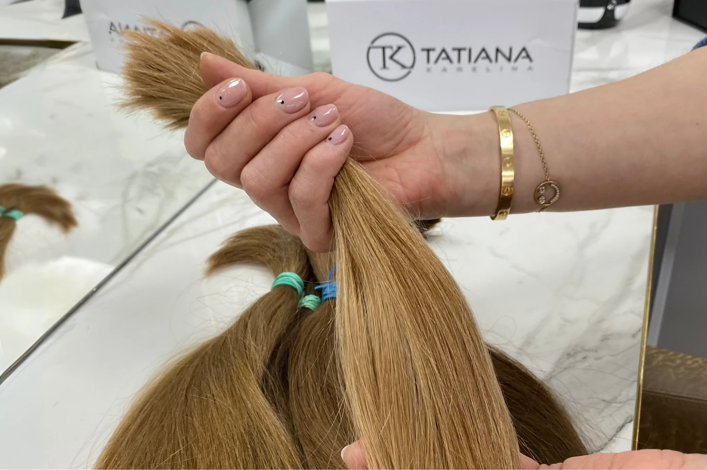
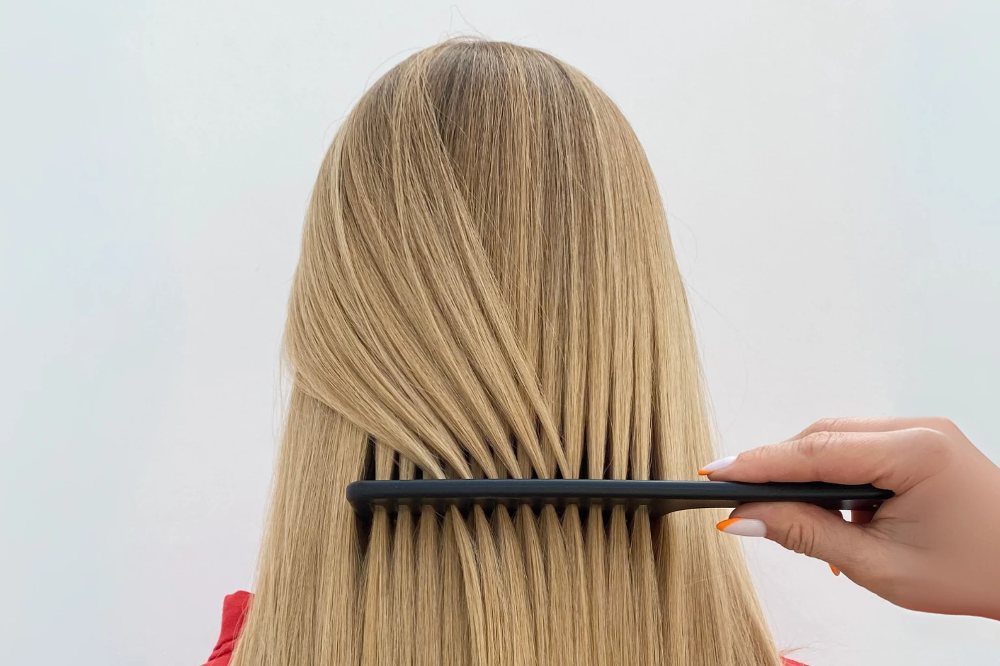

Micro Bond Hair Extensions

Discreet, reusable and comfortable
What Are Micro Bond Hair Extensions?
The micro bond technique is a discreet and durable hair extension method, particularly suited to clients with finer or sparser hair. Each keratin bond is hand formed in the salon to match your natural hair's colour, texture, and density, then applied strand by strand for a seamless and natural finish. The bonds are very small, allowing them to be placed further forward at the hairline or lower at the nape than other methods. Because the bonds are customised and volume is built gradually, the extensions move freely, feel light and comfortable, and blend perfectly, creating a soft, long lasting transformation even on delicate or hard to cover hair.
Micro bonds are suited to clients with finer or sparser hair at the root, where other methods may not work as effectively. They allow for precise placement further forward or lower at the nape, creating a natural finish even in delicate areas. Because we tip each strand in the salon using Russian hair, bonds can be reused during maintenance, making them cost effective in the long term.
- Hand tipped in salonCustom keratin bonds
- From £625Reusable at every refit
- Every 3 monthsMaintenance and retipping
- 100% Russian hairColour matched without dye
Our signature approach
What Makes Our Micro Bond Hair Extensions Different?
Our approach to micro bonds mirrors our philosophy with micro rings and that is what truly sets us apart. Unlike most salons that rely on pre tipped Indian or Asian hair, which cannot be reused, we work exclusively with Russian hair, chosen for its softness and ideal texture. During your consultation, you personally select ponytails from our inventory, and we blend strands from several to create a perfect, dye free colour match.
These strands are then hand tipped in the salon to suit your hair's density and texture. When it is time for maintenance, the hair can be removed, retipped, and refitted, with only minimal length, about half to one inch, lost in the process.

What to expect
The Micro Bond Hair Extension Journey
- First conversationWe discuss your goals and recommend an in salon consultation. If you are ready to proceed, your fitting can often take place the same day.
- Choose your hairAt your fitting you select several ponytails from our Russian hair inventory that match your natural texture and colour.
- Blending and tippingOur technician combines strands from each ponytail and hand tips them in the salon to suit your hair's density and texture.
- The fittingThe strands are attached with the micro bond technique, placed with precision even at the hairline and nape.
- MaintenanceApproximately every three months the bonds are removed, the hair is washed, trimmed and retipped, and you leave with what is essentially a brand new set.
Before and afters
See Our Micro Bond Transformations


Everything you want to know
Frequently Asked Questions
Why are Tatiana Karelina micro bond extensions regarded as the top choice in London and Manchester?
Our micro bonds are handcrafted in the salon using custom blended Russian hair, ensuring the perfect shade, density and texture for every client. Unlike pre tipped systems, each bond is created fresh for exceptional precision and discreet placement, even on finer areas around the hairline or nape. The bonds lie flat, move naturally and the hair can be safely removed, washed and reused for years. With extensive Russian hair stock, same day fittings and full price transparency, Tatiana Karelina is the leading specialist for micro bond extensions.
When should I choose micro bond extensions?
Choose micro bonds if you have finer hair, want a more permanent method, or need extensions placed further forward for natural coverage.
How long does my hair need to be for micro bond hair extensions?
For micro bonds to be fitted securely and discreetly, your natural hair should ideally be at least 3 to 4 inches long. This allows the keratin bonds to sit comfortably and blend seamlessly with your own hair.
How do you match extension hair to natural hair?
We match both colour and texture for the most natural result. During your consultation, we select several Russian ponytails that reflect your shade. Strands are drawn from each ponytail and blended before being tipped in salon, creating extensions that mirror your natural movement, thickness, and flow.
Who are micro bond extensions best for?
Micro bonds are especially suited to clients with finer or sparser hair at the roots, or those who want bonds placed further forward or lower down the nape than other methods allow. They are also ideal for anyone looking for a durable, discreet, and long wearing option.
Why are your micro bond extensions reusable when others are not?
Most salons rely on pre tipped Indian or Asian hair, which cannot usually be reused. With us, the hair is blended and tipped in salon using Russian hair. At each maintenance visit, the hair is carefully removed, washed, trimmed, and retipped, meaning it can be reused time and again while maintaining its natural quality.
Can micro bond hair extensions be placed anywhere on the head?
Yes. Because the bonds are individually created, they can be placed strategically across the head. This allows our stylists to add volume where it is needed most, and to position extensions further forward or lower at the nape for maximum natural effect.
How long do micro bond hair extensions last?
Micro bonds last around 3 months before needing maintenance. At this stage, the bonds are removed, retipped, and reapplied to account for your natural hair growth. With proper care, the hair itself can last up to 2 years, making this one of the most cost effective methods over time.
Do micro bond hair extensions feel heavy?
No. Micro bonds are created strand by strand and matched to your hair density, so the weight is evenly distributed. Once fitted, they feel lightweight and comfortable, moving naturally with your own hair.
Will my micro bond hair extensions be noticeable?
When applied correctly, micro bonds are virtually invisible. Each bond is small, discreet, and colour matched to your roots. Once fitted, they integrate seamlessly with your natural hair, so whether you wear your hair up or down, the extensions remain undetectable.
Can I combine micro bond hair extensions and micro ring hair extensions?
Yes. For some clients, a combination of both methods gives the best result. Micro rings work particularly well at the back of the head where volume and length are the focus, while micro bonds are ideal for finer areas around the hairline or lower at the nape, where discreet placement is important. By blending the two methods, we can achieve a flawless, natural finish that feels comfortable and looks seamless from every angle.
Discreet Even at the Hairline
Book a consultation in London or Manchester and see how hand tipped Russian hair bonds disappear into even the finest hair. Same day fittings are often possible.
Book Consultation